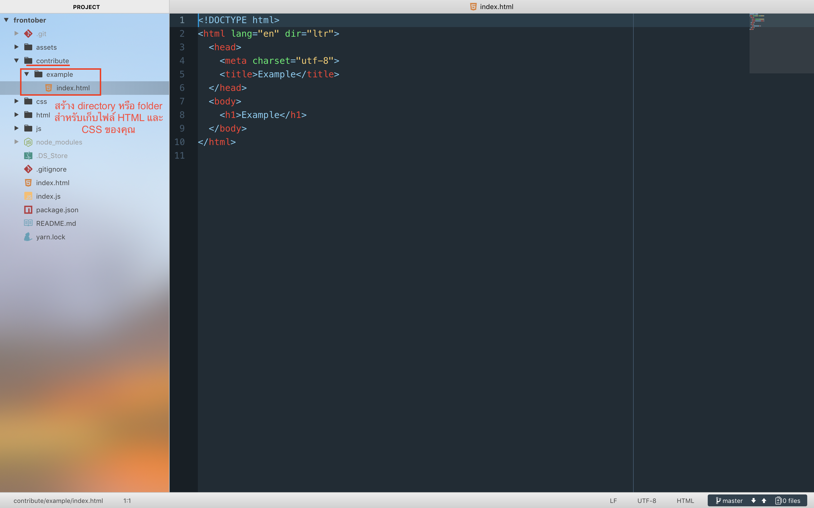
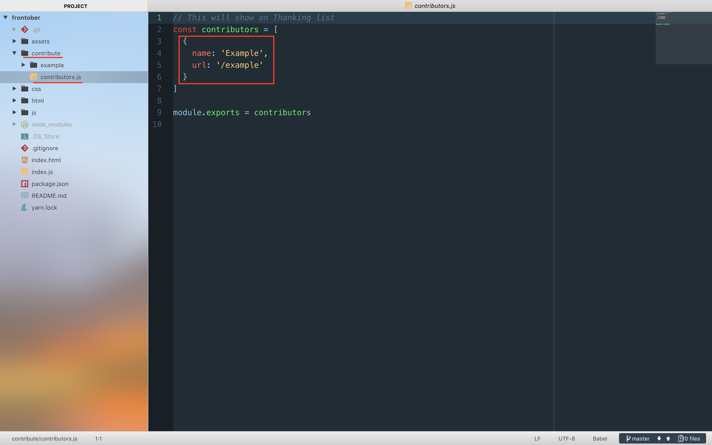

Step 3
สร้าง branch ใหม่ของคุณ
Step 4
เพิ่ม route เพื่อเข้าไปที่หน้าเว็บของคุณได้ที่ index.js
Step 5
เขียนไฟล์ HTML และ CSS ของคุณ สร้างสรรค์ได้เต็มที่!

ตัวอย่าง directory structure
Step 6
เพิ่มชื่อของคุณ และ route path ไปที่หน้าเว็บของคุณใน js/contributors

ตัวอย่างการเพิ่มชื่อในผู้ร่วมกิจกรรม
Step 7
เมื่อเขียนเสร็จแล้วก็ pull request มาได้เลย